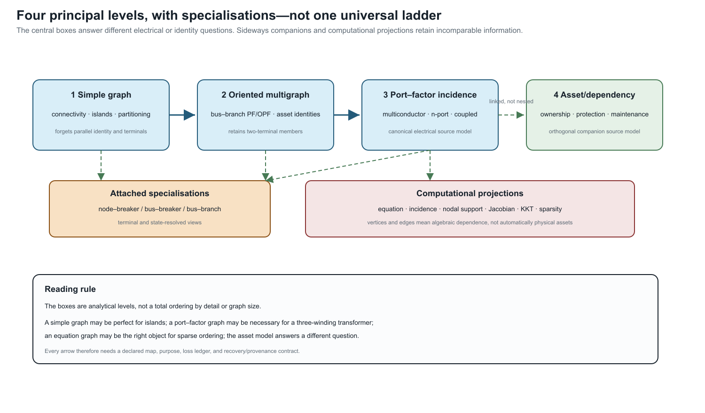

Representation taxonomy
Page status: foundational taxonomy; categories are analytical, not a standards claim.
This page is a classification card, not a second transformation specification. The authoritative registry of typed views, lowering maps, state-conditioned surgery, and diagnostics is From source graphs to views and graph surgery. The taxonomy below names the families and their typical losses; it does not redefine their object maps or preservation contracts.
The phrase power-network graph covers several mathematical and data structures that retain different facts. This taxonomy prevents a physical asset graph, an equation graph, and a solver sparsity graph from being treated as interchangeable merely because all have vertices and edges.
Five questions before naming a graph
For a representation $M$, ask:
- Identity: which physical, logical, and generated objects remain distinguishable?
- Interconnection: what counts as a terminal, junction, edge, hyperedge, or port?
- Behaviour: where do constitutive equations, controls, limits, and uncertainty live?
- State: which topology and equipment states are fixed, variable, or omitted?
- Purpose: which observations, analyses, and decisions is the representation intended to support?
Two structures with identical unlabelled topology can answer these questions differently.
Representation families
Asset and property models
Vertices represent physical or organizational entities; typed relations record containment, ownership, construction, location, protection, measurement, and provenance. Such a model may retain two electrically equivalent parallel assets as distinct while omitting the internal variables of a compiled electrical equivalent.
Terminal-connectivity models
Objects expose ordered terminals or conductor bundles. Junctions express equality and conservation without yet requiring every device to be an ordinary edge. This family is the natural baseline for explicit phases, neutrals, grounding, phase discontinuities, and switchgear.
Node–breaker and bus–branch models
A node–breaker model retains switching equipment and detailed connectivity. A state-resolved bus model quotients nodes connected by closed ideal switches. An oriented bus–branch multigraph adds identified two-terminal branches, where orientation is normally a coordinate choice rather than a physical transfer direction. A simple graph additionally forgets parallel identity.
These are different representations, not interchangeable names for resolution levels. The node–breaker row is specialized in Node–breaker, bus–breaker, and topology processing; its state-resolved quotient is one concrete instance of the general view/surgery contract.
Four principal levels and the orthogonal companions
For the main argument, the families above are organized into four principal levels. The word level refers to the dominant electrical or identity query, not to a universal refinement order:
| Principal level | What it answers | What it forgets or delegates |
|---|---|---|
| Simple graph | connectivity, islands, sparsity-free partitioning | parallel identity, terminal coordinates, device relations |
| Directed/oriented attributed multigraph | conventional bus–branch PF/OPF with each two-terminal asset retained | arbitrary-port behaviour and most internal conductor structure |
| Hierarchical port–factor incidence graph | multiconductor, multi-terminal, coupled, controlled, and ideal equipment | asset-lifecycle relations unless linked |
| Asset/dependency relation graph | ownership, protection, maintenance, failure, and shared-structure queries | electrical behaviour unless linked to factors and terminals |
The first two rows are derived electrical views; the third is the canonical electrical source formalism adopted for this book; and the fourth is an orthogonal companion rather than a more detailed circuit graph. Terminal, node–breaker, bus–branch, equation, and sparsity views are named specializations or computational projections around these four levels. They should not be counted as additional rungs in a single ladder. The rigorous objects and maps are specified in Formal representation frameworks.

The diagram is the classification in one view. The computational projections hang off the electrical source model because their vertices and edges are chosen from a declared equation or matrix support; the asset model is drawn sideways because ownership and maintenance are not a refinement of electrical boundary behaviour.
Port, factor, and hypergraph models
A behavioural factor relates variables on an arbitrary ordered set of ports. Ordinary branches are arity-two special cases. Multiwinding transformers, converters, mutual couplings, shared controls, and measurement relations need not be decomposed into artificial pairwise edges.
Algebraic and equation models
Incidence, admittance, Laplacian, Jacobian, KKT, and constraint matrices induce graphs from their nonzero structure. Their vertices may represent variables, equations, blocks, or matrix rows rather than physical objects. They are indispensable for analysis and computation, but their edges do not automatically carry physical meaning.
Equation-graph choice is coupled to formulation choice: nodal support, modified nodal, sparse tableau, branch-current, and port/factor targets can induce different variable and sparsity graphs from the same source model. The guarded formulation boundary is defined in Circuit formulations and the lowering boundary.
The block- and scalar-support graphs of the compound nodal operator are defined once in Two topology levels and the nodal projection. This taxonomy records their role without introducing a competing support definition. Likewise, a reduced/Kron row in this table names a view family; its elimination and recovery conditions belong to the compiled-view and reduction chapters.
Study-specific compiled models
A power-flow, OPF, state-estimation, fault, or decomposition model selects variables and relations for a task. Compilation may create virtual buses and branches, eliminate explicit currents, fix states, relax constraints, or introduce auxiliary variables. Graph size alone therefore says nothing reliable about physical or decision expressiveness.
Comparison by retained meaning
| Family | Primary objects | Strongest use | Characteristic omission |
|---|---|---|---|
| Asset/property | equipment, owners, locations, records | identity and lifecycle | electrical state equations |
| Terminal connectivity | terminals, junctions, switches | conductor-aware interconnection | device behaviour unless linked |
| Bus–branch multigraph | buses and identified branches | conventional network algorithms | internal device and conductor structure |
| Simple topology or weighted graph | vertices and quotient edges | connectivity, visualization, and generic graph methods | parallel identity, controls, limits |
| Port–factor/hypergraph | ports and behavioural relations | multi-terminal composition | asset meaning unless linked |
| Equation/sparsity graph | variables, equations, nonzeros | numerical solution and decomposition | most physical identity |
No row is globally maximal. An asset graph and a compiled equation graph may retain incomparable information.
A simple topology graph must not be identified with a sparsity graph merely because both are simple graphs. Their vertices and adjacency rules differ: one records a quotient of physical incidence, while the other records nonzero algebraic dependence in a declared matrix or equation system.
Comparison by decision support
| Required question | Representation obligation | Common failure |
|---|---|---|
| Which asset is out of service? | stable element identity and state | aggregated edge has no member state |
| Is every conductor within its rating? | terminal/conductor currents and limits | scalar branch rating replaces several limits |
| May a switch be operated? | switch identity, admissible states, control ownership | closed-switch quotient discards the choice |
| Is grounding represented correctly? | neutral, earth, reference, and impedance semantics | neutral and ground are conflated |
| Is an OPF decision equivalent? | feasible-set, objective, and decision maps | terminal voltages agree but active constraints change |
| Can source results be reconstructed? | recovery map and provenance | virtual or eliminated objects have no source correspondence |
Axes, not one ladder
Representations should be located along several independent axes:
- physical identity retained or forgotten;
- conductor and terminal resolution;
- factor arity and device vocabulary;
- hierarchy and subsystem boundaries;
- fixed versus variable topology state;
- equations only versus equations plus feasible sets and decisions;
- exact versus approximate behaviour;
- source provenance and recoverability;
- physical versus computational interpretation.
A representation can be simpler on one axis and richer on another. Compiling a transformer into a loss network may increase the number of vertices while reducing the device vocabulary. Eliminating internal buses may reduce the vertex count while creating dense coupling and more complicated constraints.
The general multiconductor baseline
The book begins with arbitrary ordered terminal sets and full conductor coupling. A transmission bus–branch model appears when additional conditions justify several collapses, for example:
- the retained buses have compatible phase sets and ordering;
- the system is sufficiently balanced for the declared observations;
- sequence domains decouple under the element models used;
- neutral and grounding behaviour is absent, externally fixed, or validly reduced;
- equipment can be represented as identified two-terminal branches;
- per-conductor and device-internal constraints do not affect the decisions of interest;
- parallel aggregation retains all relevant member states and all nonredundant limits, with any removed constraint certified as implied, or those distinctions are outside the contract.
This explains why many transmission studies can use compact graphs successfully without treating their assumptions as universal power-network semantics.
Proposed linked reference architecture
The working hypothesis of this book is that two linked structures provide a useful source from which the major representation families can be generated:
- a typed asset/property model for stable physical and organizational identity;
- a typed hierarchical port–factor model for electrical interconnection, behaviour, limits, and decisions.
This is a proposal to test. Evidence must include faithful mappings of multiconductor lines, multiwinding transformers, switchgear, grounding, parallel assets, controls, and study-specific models—not only an abstract claim of generality.
A representation card
Every representation chapter and knowledge-base entry should record:
| Field | Question |
|---|---|
| Object types | What becomes a vertex, edge, port, factor, or attribute? |
| Identity | Which objects remain distinguishable? |
| Coordinates | How are terminals, conductors, orientation, units, and bases declared? |
| Behaviour | Which equations and inequalities are native? |
| State | Which continuous and discrete states are represented? |
| Purpose | Which analyses or decisions motivate the view? |
| Loss | What cannot be answered from this view alone? |
| Recovery | Can source quantities or objects be reconstructed? |
| Provenance | How are generated objects related to source objects? |
| Evidence | Is the mapping proved, tested, standardized, observed in practice, or proposed? |